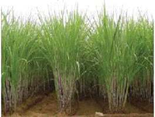
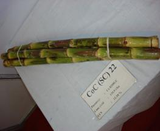
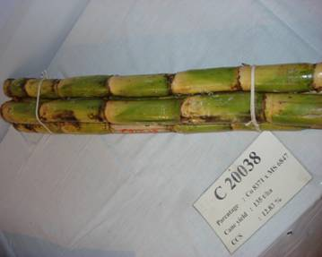

Sugarcane is grown chiefly in the main season (December - May) in the entire State. In parts of Tiruchirapalli, Perambalur, Karur, Salem, Namakkal and Coimbatore districts, it is also raised during the special season (June - September). The particulars in respect of each season are given below:
Season, Period of Planting
1. Main season
i) Early : Dec - Jan ii) Mid : Feb - March iii) Late: April - May
2. Special season : June - July
Early season varieties are suitable for special season.
Co 86032 |
 Co 99004 |
 |
|  |
Co 99004 (Damodar)
II. Particulars of Variety
| Variety | Duration (Month) | Cane yield (t/ha) | CCS% | CCS(t/ha) |
| COC 671 | 10 | 123.5 | 14.20 | 17.50 |
| COC 771 | 10 | 140.0 | 13.10 | 18.30 |
| COC 772 | 10 | 143.3 | 14.00 | 20.00 |
| COC 773 | 10 | 97.5 | 13.20 | 12.60 |
| COC 8001 (C 66191) | 10 - 11 | 102.9 | 13.20 | 13.50 |
| COC 774 | 11 | 159.8 | 11.90 | 17.90 |
| COC 775 | 11 | 122.5 | 13.40 | 16.40 |
| COC 776 | 11 | 112.3 | 14.00 | 15.50 |
| COC 777 | 12 | 171.3 | 11.80 | 20.00 |
| COC 778 | 12 | 165.5 | 11.00 | 18.10 |
| COC 779 | 12 | 204.6 | 11.80 | 24.00 |
| CO 419 | 12 | 112.5 | 10.50 | 11.80 |
| CO 6304 | 12 | 115.0 | 13.50 | 15.50 |
| COC 8001 | 10 - 11 | 102.5 | 13.20 | 13.50 |
| COC 85061 | 10 - 11 | 128.5 | 12.90 | 16.60 |
| COC 86062 | 10 - 11 | 133.5 | 12.60 | 16.80 |
| COSi 86071 | 10 - 11 | 131.7 | 12.20 | 16.00 |
| COC 90063 | 10 - 11 | 124.0 | 12.30 | 15.40 |
| CO 8021 | 10 - 11 | 137.7 | 11.00 | 14.60 |
| COC 91061 | 10 - 11 | 131.0 | 11.30 | 15.60 |
| COC 92061 | 8 - 11 | 132.7 | 12.76 | 16.05 |
| CO 8362 | 11 - 12 | 124.3 | 12.40 | 15.40 |
| COG 93076 | 11 - 12 | 132.0 | 13.20 | 17.40 |
| CO 8208 | 11 - 13 | 141.5 | 11.07 | 15.28 |
| COG 94077 | 11 | 133.2 | 13.5 | 17.6 |
| COG 95076 | 10 - 11 | 108.2 | 11.5 | 12.4 |
| CO 85019 | 12 | 134.5 | 12.5 | 16.8 |
| COSi 95071 | 10 | 152.0 | 12.9 | 21 |
| COSi 96071 | 10 | 145.0 | 11.9 | 17.3 |
| CO 86010 | 10 - 12 | 146.1 | 10.78 | 15.64 |
| COC 98061 | 10 - 11 | 120.0 | 11.60 | 13.80 |
| COSi 98071 | 12 | 144.7 | 12.3 | 17.7 |
| CO 86249 | 10 - 12 | 128.7 | 11.3 | 14.3 |
| COC 99061 | 10-12 | 130.3 | 11.9 | 15.6 |
| Characters | COC 671 | COC 771 | COC 772 | COC 773 |
| Parentage | Q63xCO775 | CO419xCO658 | CO740xCO658 | CO658XCO1305 |
| Leaf size | Broad | Broad | Broad | Broad |
| Leaf colour | Green | Green | Green | Green |
| Sheath colour | Green with purple tinge | Green with purple tinge | Green with purple tinge | Green with purple tinge |
| Sheath | ||||
| Clasping | Loose | Loose | Loose | Loose |
| Spines | Present | Present | Present | Present |
| Ligular process | Present | Absent | Absent | Present |
| Stem colour | Green with | Yellow with | Yellow with | Yellow with |
| purple tinge | purple tinge | Green tinge | green tinge | |
| Girth | Thick | Medium | Medium | Medium |
| Joint | Staggered | Straight | Staggered | Straight |
| Bud Groove | Absent | Present | Absent | Absent |
| Size | Medium | Medium | Medium | Medium |
| Character | COC 778 | COC 779 | CO 419 | COC 85061 |
| Parentage | CO419xCO 853 | CO419xCO853 | Poj 2878xCO290 | CO6304 GC |
| Leaf size | Broad | Broad | Broad | Medium |
| Leaf colour | Green | Green | Green | Light green |
| Sheath colour | Purple | Purple | Green with Green tinge | Green with pink tinge |
COC (SC) 24 |
TNAU Sugarcane SI 7 |
Main Field Preparation for Planting Sugarcane
1. Preparation of Field
a) Wetland (Heavy soils): In wetlands, preparatory cultivation
by ploughing the land and bringing the soil to fine tilth could not be done.
i. After harvest of the paddy crop, form irrigation and drainage channels of 40 cm depth and 30 cm width at intervals of 6 m across the field and along the field borders.
ii Form ridges and furrows with a spacing of 80 cm between rows with spade.
iii.Stir the furrows with hand hoes and allow the soil to weather for 4 to 5 days.
b) Problem soils with excessive soil moisture:
In problem soils, with excessive moisture where it is difficult to drain water, form raised beds at 30 cm intervals with Length - 5 m, Width - 80 cm, and Height -15 cm.
Garden lands with medium and light soils:
In medium and light soil irrigated by flow or lift irrigation adopt the following:
2. Basal application of organic manures:
Apply FYM at 12.5 t/ha or compost 25 t/ha or filter press mud at 37.5 t/ha before the last ploughing under gardenland conditions. In wetlands this may be applied along the furrows and incorporated well.
Preparation of reinforced compost from sugarcane trash and pressmud:
Spread the sugarcane trash to a thickness of 15 cm over an area of 7 m x 3 m.
Then apply pressmud over this trash to a thickness of 5 cm. Sprinkle the fertilizer mixture containing mussoorie rock phosphate,
gypsum and urea in the ratio of 2:2:1 over these layers at the rate of 5 kg/100 kg of trash. Moist the trash and pressmud layers adequately with water.
Repeat this process till the entire heap rises to a height of 1.5 m. Use cowdung slurry instead of water to moist the layer wherever it is available. Cover the heap with a layer of soil and pressmud at 1:1 ratio to a thickness of 15 cm.
Leave the heap as such for three months for decomposition. Moist the heap once in 15 days. During rainy season, avoid moistening the heap. After three months, turn and mix the heap thoroughly and form a heap and leave it for one more month. Then turn and mix the heap thoroughly at the end of the fourth month. Moist the heap once in 15 days during 4th and 5th month also. This method increases the manurial value of trash compost by increasing, N, P and Ca content. It also brings down the C:N ratio by 10 times as compared to raw cane trash.